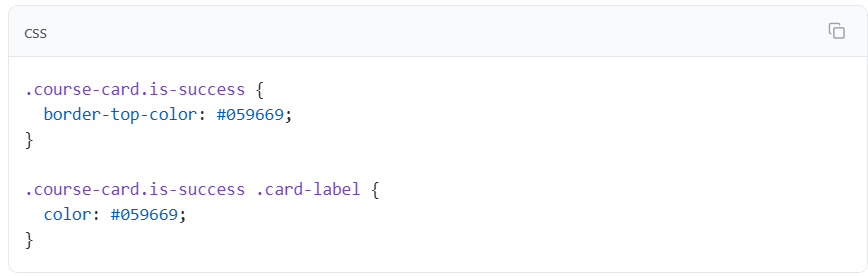
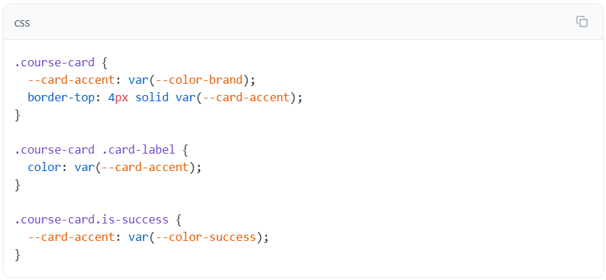
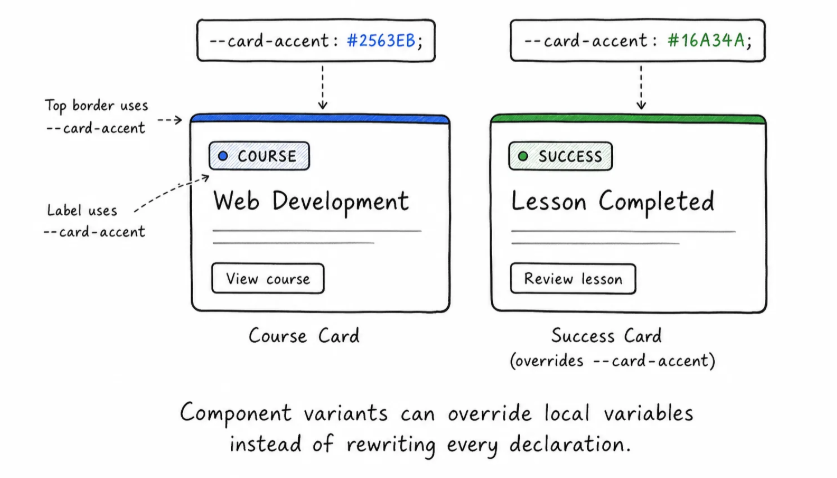
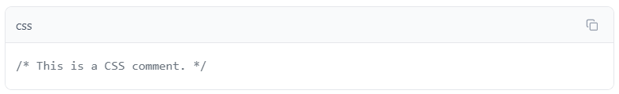
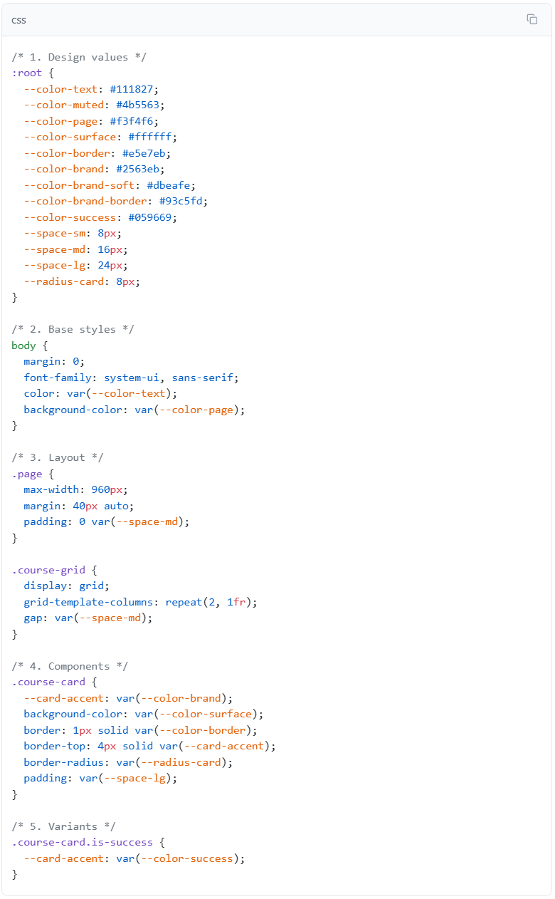

Core lesson
CSS selectors
Review how selectors match elements and how the browser applies rules.
Open lessonCSS practice
Colors, spacing, and component variants become easier to manage when repeated values have names.
Core lesson
Review how selectors match elements and how the browser applies rules.
Open lessonProject ready
Use layout, media, and accessibility habits together in one page.
Open projectI can't get this to work.
CSS variables are still CSS, which means they follow the cascade and can be scoped to part of the page.
Right now, the success card needs a different accent color. The old CSS did this by styling each piece separately:

That works, but it repeats the idea: this card's accent should be green. Instead, replace those separate success-card rules with a local accent variable on each card:

The normal card sets --card-accent to the brand color.
The card border and card label both use var(--card-accent).
The success card overrides only --card-accent.
Because custom properties inherit, the .card-label inside the success card can use the green value from its parent card.
This is one of the best uses of CSS variables: define a component once, then change a small set of local values for variants.

var() can include a fallback value. The fallback is used if the custom property is missing or invalid.

This means: use --color-action if it exists. If it does not exist, use #2563eb.
Fallbacks are useful when:
For this lesson, most values live in :root, so fallbacks are not required everywhere. Use them where a missing value would make the component hard to read or use.
Variables help values stay consistent, and organization helps people find the right rule later.
CSS comments use this syntax:

The browser ignores comments because they are for people reading the file.
A small stylesheet can be organized like this:

The exact section names can change by project. The useful habit is to group rules by job:
Do not over-organize a tiny file. But once a stylesheet grows, sections help you avoid hunting.
Here is the practical map:
| Pattern | What it does |
|---|---|
| :root { ... } | Stores values that should be available across the page. |
| --color-brand: #2563eb; | Defines a custom property. |
| var(--color-brand) | Uses the custom property value. |
| var(--color-brand, #2563eb) | Uses a fallback if the custom property is missing. |
| .course-card { --card-accent: ... } | Creates a local component value. |
| .is-success { --card-accent: ... } | Overrides the local value for a variant. |
CSS variables are most useful when they make change safer. If a value has a clear job and appears in several places, give it a name. If it is a one-time detail, keep the CSS direct.